Je conçois des produits et ce qui les fait tenir.
Product designer + Design strategist
Depuis 12 ans, je travaille entre produit, design et stratégie, dans des environnements complexes. Je m’intéresse autant aux usages qu’à ce qui se joue entre les personnes, les équipes et les produits : ce qui circule, ce qui se décide, ce qui bloque.
Disponible
Lyon
À distance
AlohaBonsoir, moi c'est Brann !
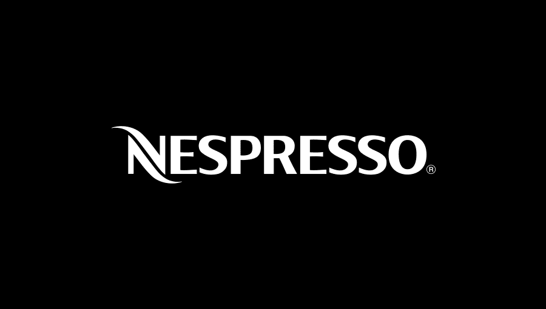
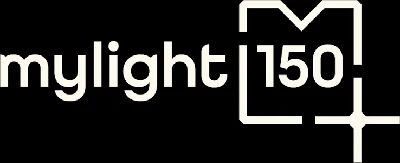
Quand le produit ne suffit pas.
Quelques situations pour comprendre ce qui ne tient plus entre les personnes, les usages et les produits, et ce qu’on peut concevoir autrement.
Cinq études de cas, du terrain à la conception.

 Repenser comment les patients s'y retrouvent dans des parcours de soin complexes, sans aucun accès direct à eux.
Repenser comment les patients s'y retrouvent dans des parcours de soin complexes, sans aucun accès direct à eux.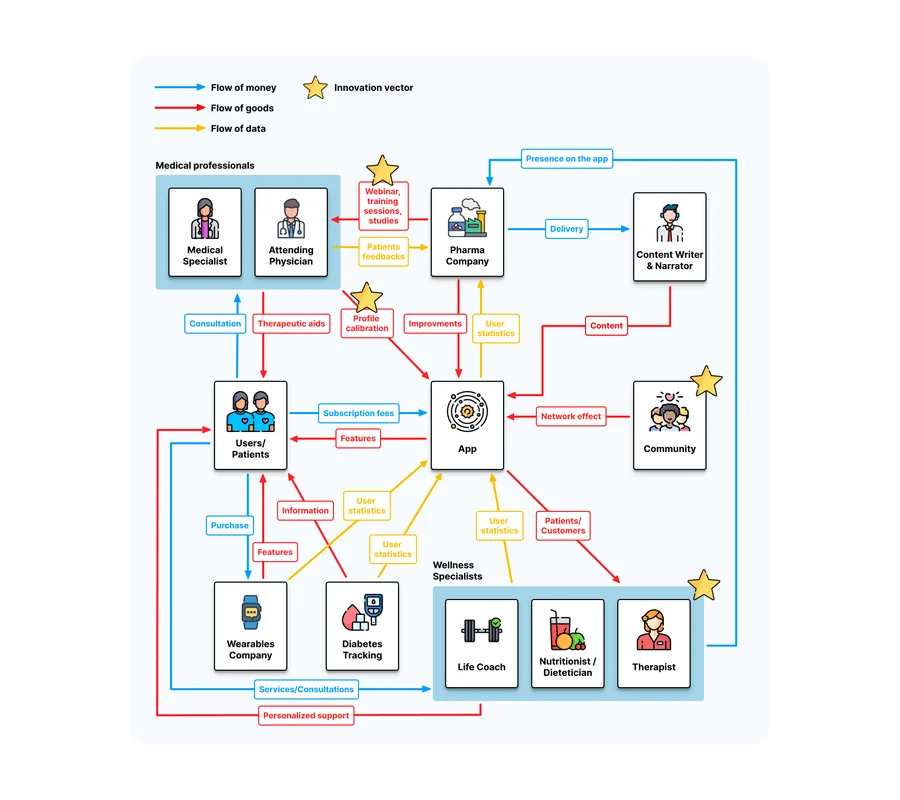
Une plateforme de pilotage marketing déployée dans un groupe mondial, et des équipes qui ne s'en emparent pas.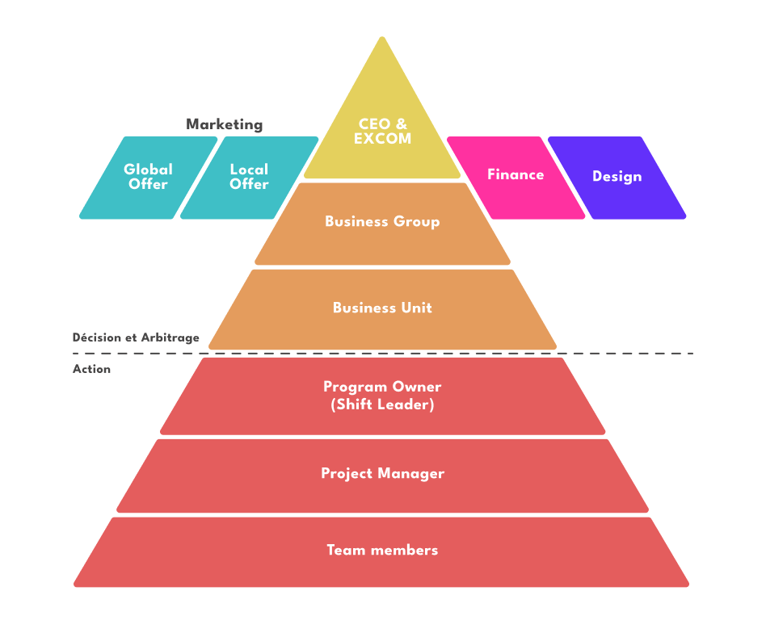
Remplacer un fichier Excel de dix-huit pages, devenu un obstacle, par un outil de pilotage commercial moderne.
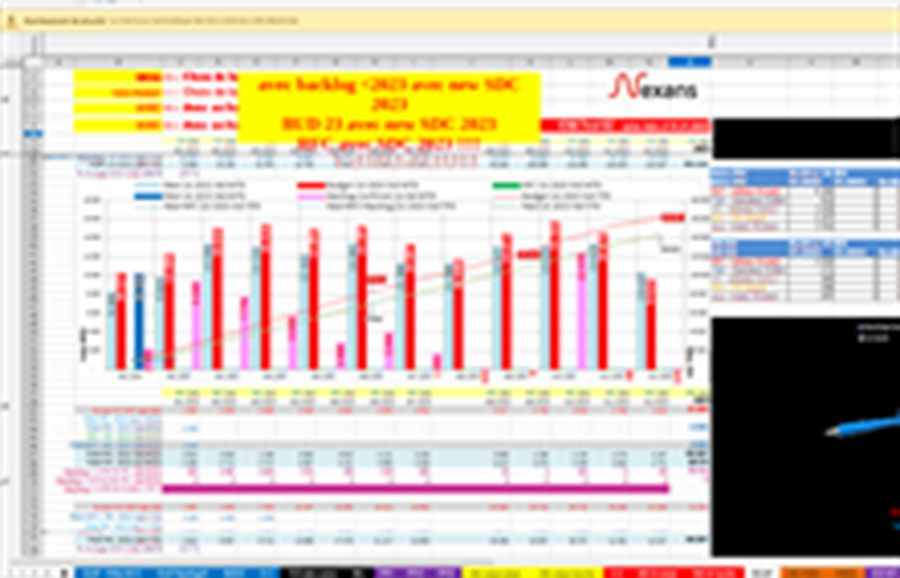
Une plateforme de commande en ligne qui ne représente que 2,5 % des ventes, malgré une première refonte avortée.
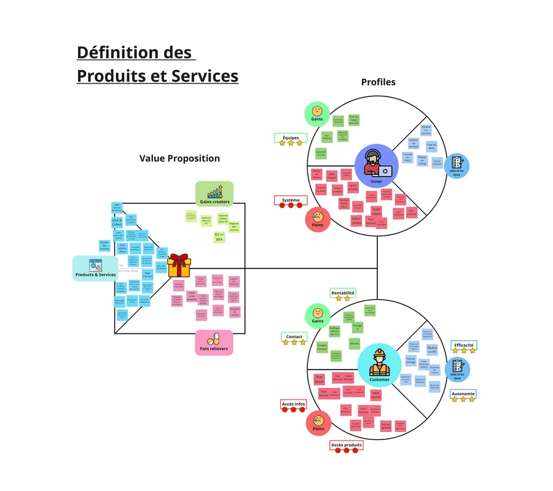
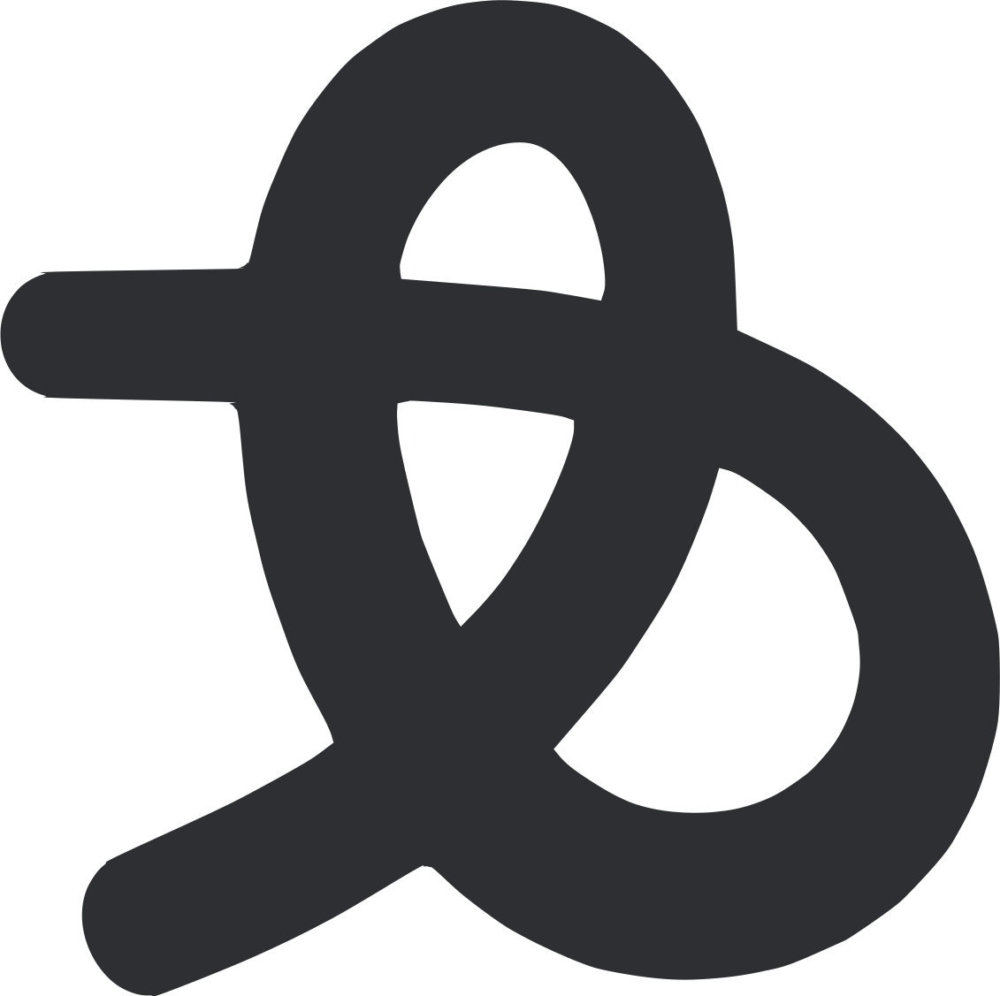
Une application pour le festival d'arts de la rue, de la recherche au prototype codé, pour le public et pour les compagnies.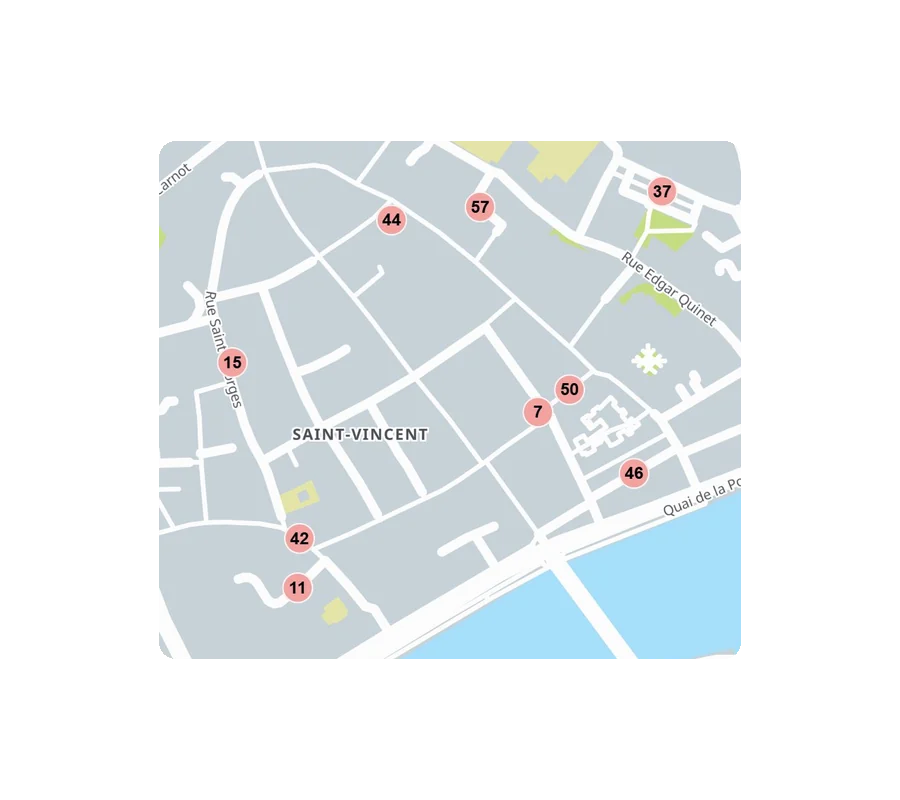
Produire un outil ne coûte presque plus rien. Se tromper de problème n'a jamais coûté aussi cher.
Vous m'appelez pour un produit.
Je m'assure qu'il résolve le vrai problème.